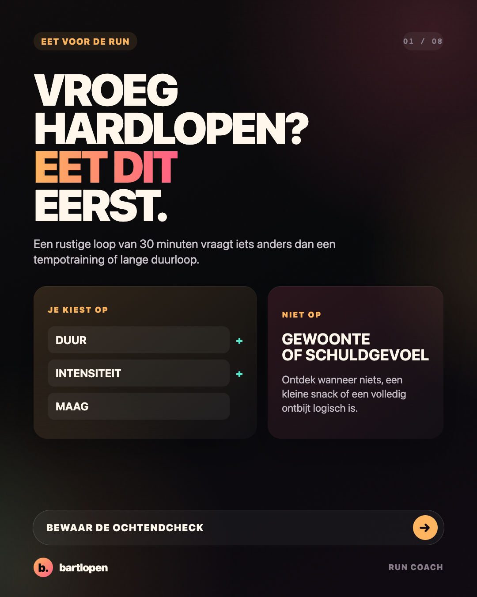
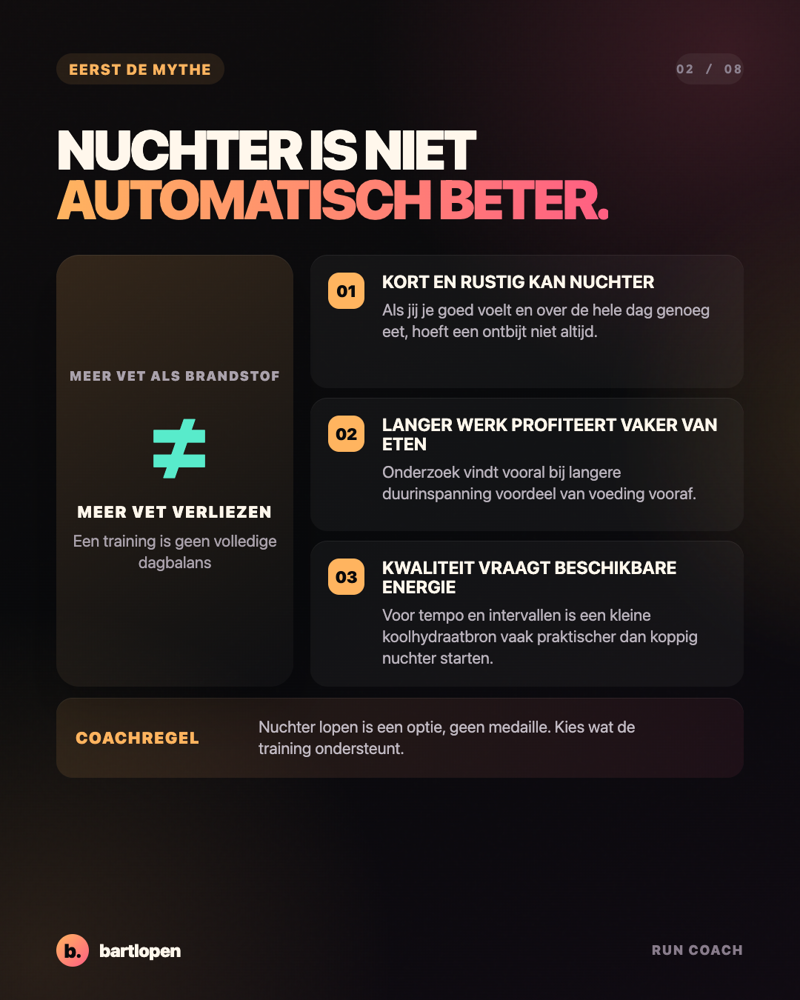
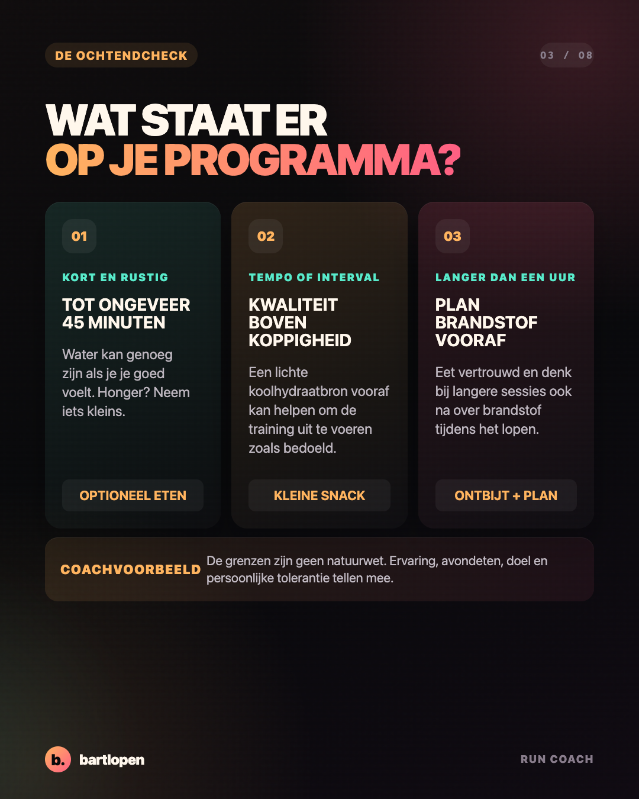
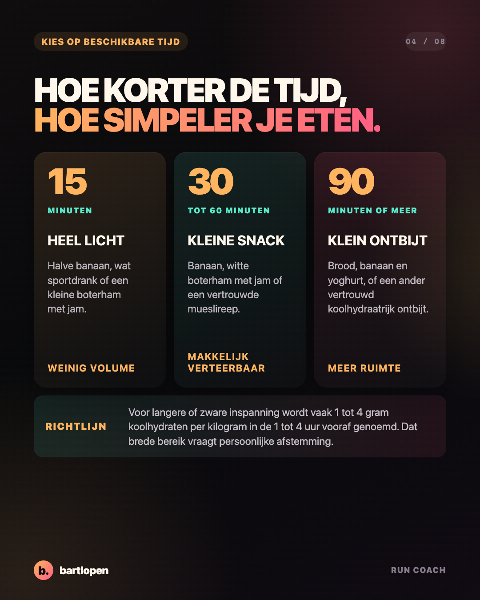
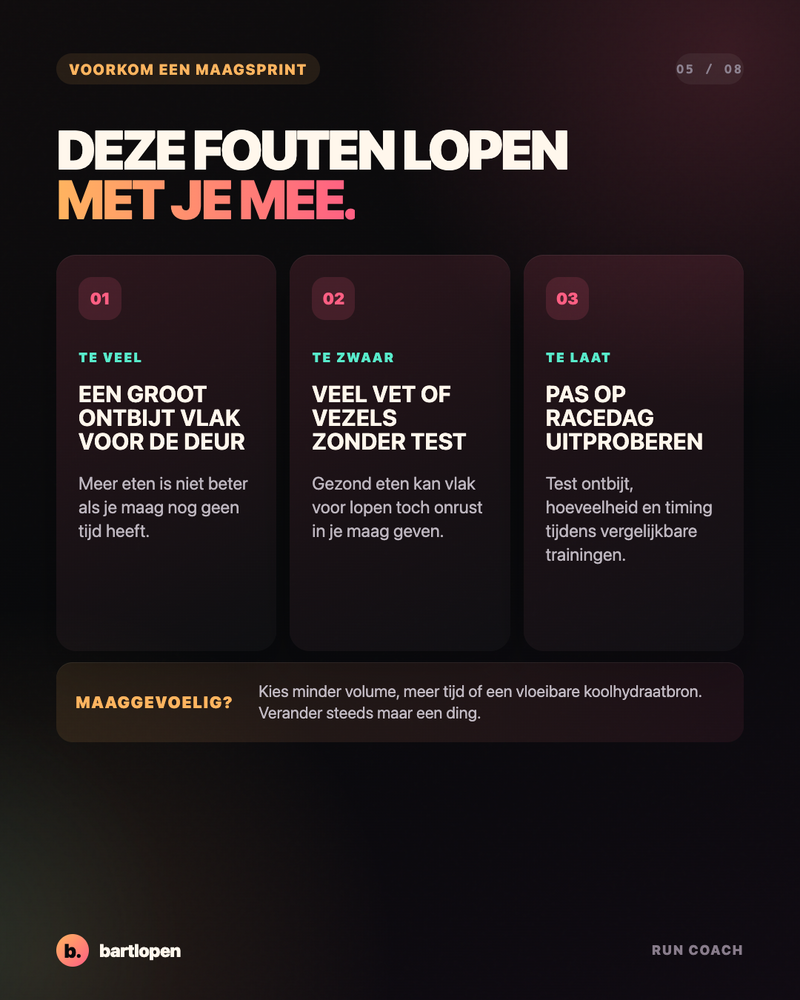
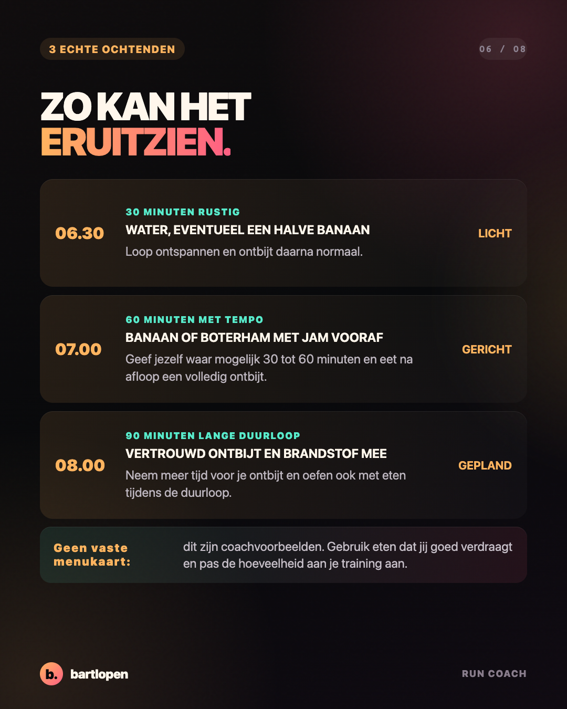
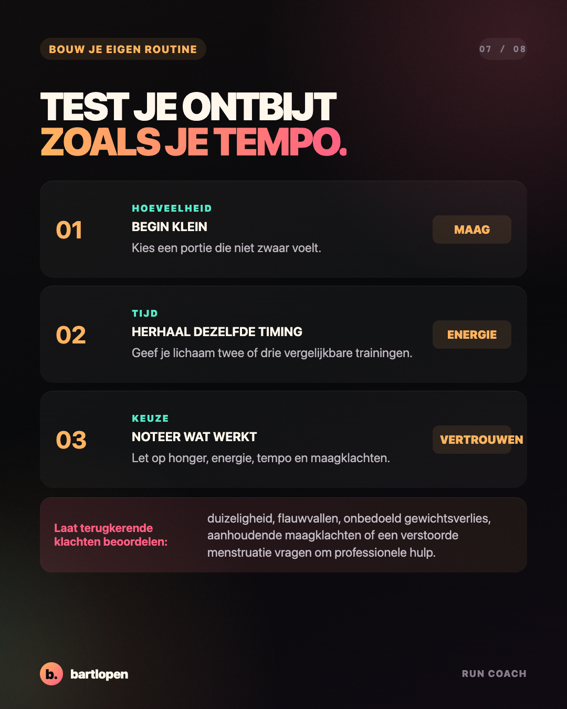
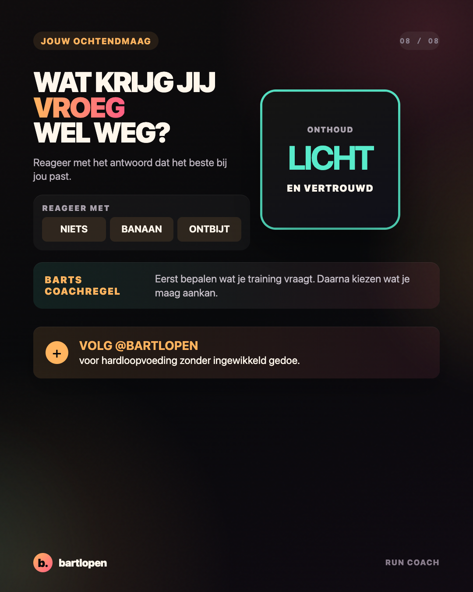

SLIDE 01 ↗Vroeg hardlopen?
Eet dit eerst.
Acht praktische slides waarmee je kiest tussen nuchter lopen, een lichte snack of een volledig ontbijt op basis van je training en maag.

SLIDE 02 ↗
SLIDE 03 ↗
SLIDE 04 ↗
SLIDE 05 ↗
SLIDE 06 ↗
SLIDE 07 ↗
SLIDE 08 ↗Caption
VROEG HARDLOPEN? JE HOEFT NIET ALTIJD TE ONTBIJTEN. 👀 Een rustige loop van 30 minuten vraagt iets anders dan een tempotraining of lange duurloop. Nuchter lopen kan prima voelen, maar het is geen medaille en ook niet automatisch beter voor vetverlies. Mijn praktische ochtendcheck: ✅ kort en rustig? Water kan genoeg zijn ✅ tempo of interval? Kies een lichte koolhydraatbron ✅ langer dan een uur? Plan ontbijt en eventueel brandstof onderweg ✅ gevoelige maag? Minder volume, meer tijd en steeds maar een ding testen Kies niet het perfecte ontbijt. Kies iets lichts, vertrouwds en passend bij je training. Wat krijg jij vroeg wel weg: NIETS, BANAAN of ONTBIJT? 👇 #hardlopen #hardlooptips #sportvoeding #ochtendrun #runningtips #marathontraining #runcoach #bartlopen
Onderbouwing: de meta-analyse naar nuchter en gevoed trainen, de review uit 2025 over ontbijt en sportprestatie, het ACSM-standpunt over sportvoeding, de voedingsbronnen van World Athletics en het IOC-consensusdocument over lage energiebeschikbaarheid. De tijdsgrenzen, voorbeelden en producten zijn coachvoorbeelden en geen persoonlijk voedingsadvies.